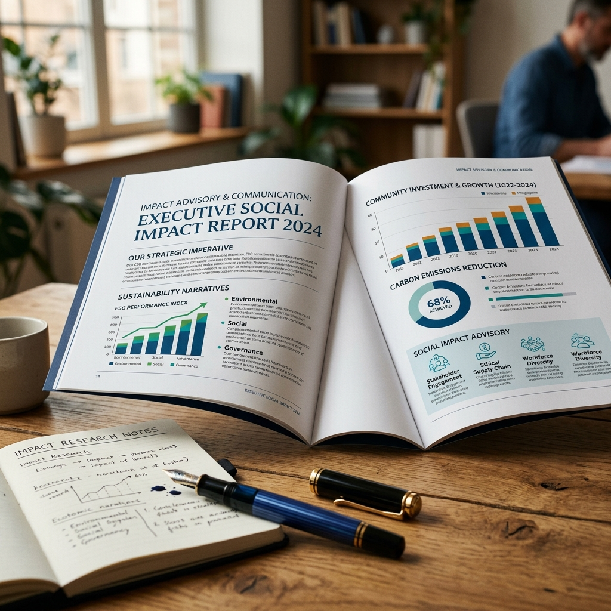

Impact Advisory & Dashboards
Impact Communication
Strategic impact narrative and executive reporting.

An activity completed is not the same as a life changed. At Ethyra, we work to close that gap.
Design. Deliver. Demonstrate. Hover or tap a card to see it in detail.
Start with the problem, not the proposal.
A strong programme begins with a clear understanding of the challenge it aims to address. We help organisations translate community needs and stakeholder insights into practical programmes with defined objectives, intended outcomes, and a clear direction for implementation.
A strong programme begins with a clear understanding of the challenge it aims to address. We help organisations translate community needs and stakeholder insights into practical programmes with defined objectives, intended outcomes, and a clear direction for implementation.
Discuss Programme Design about Programme DesignDon't wait until the end to learn what could have been improved.
Programmes evolve during implementation. Monitoring and evaluation help organisations understand whether activities are progressing as planned, whether intended outcomes are emerging, and where adjustments may be needed. We help establish practical systems to track performance, generate useful evidence, and support timely decisions.
Programmes evolve during implementation. Monitoring and evaluation help organisations understand whether activities are progressing as planned, whether intended outcomes are emerging, and where adjustments may be needed. We help establish practical systems to track performance, generate useful evidence, and support timely decisions.
Strengthen Your MEL System about Monitoring, Evaluation & LearningGo beyond the numbers. Understand the significance of change.
Programme data can show what happened. Understanding the significance of those changes requires a closer look at outcomes, stakeholder experiences, context, and the factors that may have contributed. We conduct research and assessment to help organisations develop a more credible understanding of programme outcomes and their implications for communities.
Programme data can show what happened. Understanding the significance of those changes requires a closer look at outcomes, stakeholder experiences, context, and the factors that may have contributed. We conduct research and assessment to help organisations develop a more credible understanding of programme outcomes and their implications for communities.
Discuss an Impact Assessment about Social Impact AssessmentImpact Communication
Strategic impact narrative and executive reporting.

Ethyra works with CSR foundations, institutions and development organisations.
A structured programme design grounded in identified needs, with clear objectives, an intended pathway to change, and a practical implementation plan.
Organisations planning a new CSR initiative, reviewing an existing programme, or developing a stronger foundation for social investment.
Better visibility into programme performance, more structured evidence of progress, and actionable insights to strengthen implementation.
Organisations seeking to improve monitoring systems, assess progress against objectives, identify implementation gaps, or build a stronger learning culture.
A clearer picture of the outcomes observed, the experiences of people affected, the intervention's plausible contribution, and the lessons that can inform future decisions.
Organisations seeking to assess programme outcomes, understand social value, strengthen impact reporting, or inform decisions about future investment.
CSR foundations, institutions and development organisations.
Three stages, one question: what changed?
 Stage 1
Stage 1
Systemic problem formulation and a clear theory of change, before capital is committed.
 Stage 2
Stage 2
Continuous monitoring and early-warning alerts, so field teams can pivot and tune mid-flight.
 Stage 3
Stage 3
Attribution models and counterfactual benchmarks that answer the ultimate question: what changed?
We work with corporates, CSR teams, NGOs, and development organisations looking to design stronger programmes, understand progress, and assess social impact.
Start with your question. Need to define the right intervention? Choose CSR Programme Design. Need to track progress? Choose MEL. Want to understand what changed? Choose Social Impact Assessment.
Yes. Needs Assessments help identify community priorities, while baseline, midline, and endline assessments help establish starting conditions and track changes over time.
Yes. We can explore ways to strengthen programme design, improve monitoring systems, assess progress, or understand outcomes.
We consider your objectives, geography, target population, available data, timeline, and expected deliverables before defining the scope.
Tell us about your organisation, the challenge you're facing, and the support you're looking for. We'll discuss the next steps.